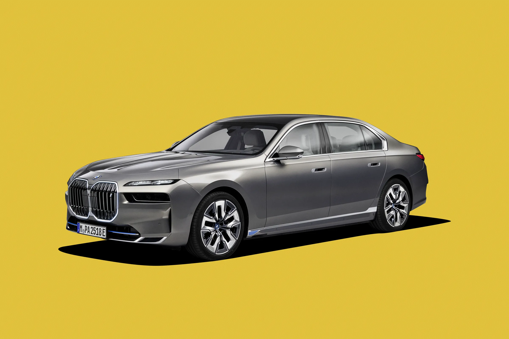
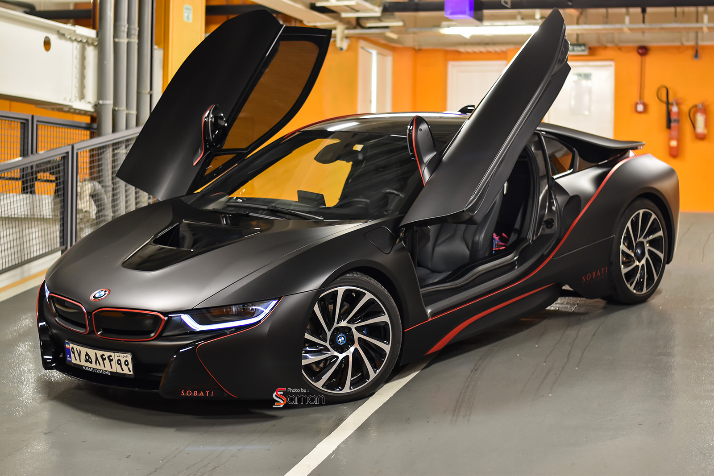

بی ام و در سال 2011 بخش زیر نام تجاری خود را احیا کرد - خیلی قبل از اینکه بیشتر مردم حتی نام تسلا را بشنوند - برای طراحی و ساخت خودروهای برقی پلاگین. خودروهای راهاندازی خودروهای i3 و i8 بودند که هنوز در حال تولید بودند. این یک قمار گران بود، اما حتی اگر BMW بیش از 240000 دستگاه از این دو خودرو را در سراسر جهان فروخته بود - و تا سال 2019 بیش از نیم میلیون فروش گروهی از بخش i داشت - فقط برای برند ارزشش را داشت. ارزش اعطا شده با به خطر انداختن ادعای خود در مورد خودروهای الکتریکی قبل از هر تولیدکننده بزرگ دیگری.
اکنون، پس از سالها انتظار و احتمالاً بیش از اندکی آزار داخلی از اینکه Merc ابتدا به آنجا رسید، بامو سرانجام از یک نسخه کامل برقی از سری ۷ گرانقیمت خود، i7 رونمایی کرد – و برخلاف EQS، شبیه BMW به نظر میرسد. تکنولوژی این خودرو را مورد توجه جدی قرار داده است.

BMW i8 یک خودروی اسپرت هیبریدی پلاگین است که توسط BMW ساخته شده است. i8 بخشی از ناوگان برقی BMW بود و تحت برند فرعی BMW i به بازار عرضه شد. نسخه تولیدی BMW i8 در نمایشگاه خودرو فرانکفورت 2013 رونمایی شد و در ژوئن 2014 در آلمان منتشر شد. تحویل به مشتریان خرده فروشی در ایالات متحده در اوت 2014 آغاز شد. یک نوع رودستر در می 2018 عرضه شد. تولید در ژوئن 2020 به پایان رسید.
ب ام و i8 2015 شتاب 0 تا 100 کیلومتر در ساعت (62 مایل در ساعت) را در 4.4 ثانیه داشت و حداکثر سرعت آن به صورت الکترونیکی 250 کیلومتر در ساعت (155 مایل در ساعت) محدود شد. مدل سال 2015 i8 دارای یک بسته باتری لیتیوم یونی 7.1 کیلووات ساعتی بود که برد تمام الکتریکی 37 کیلومتر (23 مایل) را تحت چرخه رانندگی جدید اروپایی ارائه می کرد. تحت چرخه EPA ایالات متحده، برد در حالت EV 24 کیلومتر (15 مایل) بود. ظرفیت باتری هر دو BMW i8 رودستر و i8 کوپه در سال 2018 به 11.6 کیلووات ساعت افزایش یافت و به برد الکتریکی NEDC اجازه داد تا 55 کیلومتر افزایش یابد. (34 مایل) برای کوپه و 53 کیلومتر (33 مایل) برای رودستر.